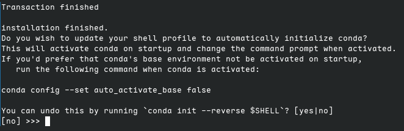

debian是一个自由操作系统，又被称做Debian GNU/linux，官网是https://debian.org。本贴持续更新哈。
有时简直想告诉读者，快点使用搜索引擎吧，这不比我的破教程香
换源#
DEB882格式：适用于debian12及以上。目前稳定版是Debian13（Trixie）
# /etc/apt/sources.list.d/debian.sources
Types: deb
URIs: http://mirror.nju.edu.cn/debian/
Suites: trixie trixie-updates
Components: main contrib non-free non-free-firmware
Signed-By: /usr/share/keyrings/debian-archive-keyring.gpg
# Types: deb
# URIs: http://security.debian.org/debian-security
# Suites: trixie-security
# Components: main contrib non-free non-free-firmware
# Signed-By: /usr/share/keyrings/debian-archive-keyring.gpg换源后记得升级包哦
sudo apt update && sudo apt upgrade升级包
升级系统版本到测试版的方法
- 换源至测试版
- 最小更新
sudo apt upgrade --without-new-pkgs - 重启
- 中等更新
sudo apt upgrade - 重启
- 全面更新
sudo apt full-upgrade - 重启，
sudo apt update && sudo apt upgrade
常用下载#
sudo apt install wget curl vim htop font-manager tlp tlp-rdw
# tlp 电池优化
# ThinkPad 需要一些附加软件包。
# sudo apt install tp-smapi-dkms acpi-call-dkms下载截图工具:snipaste，不过KDE自带的spectacle功能也挺好用的
Chrome浏览器：(速度竟然还挺快)
# 获取GPG验证密钥
curl -fSsL https://dl.google.com/linux/linux_signing_key.pub | sudo gpg --dearmor | sudo tee /usr/share/keyrings/google-chrome.gpg >> /dev/null
# 添加google-chrome仓库
echo "deb [arch=amd64 signed-by=/usr/share/keyrings/google-chrome.gpg] http://dl.google.com/linux/chrome/deb/ stable main" | sudo tee /etc/apt/sources.list.d/google-chrome.list
# 安装
sudo apt update && sudo apt install -y google-chrome-stable输入法#
sudo apt install fcitx5 fcitx5-chinese-addons fcitx5-rime词库使用雾凇拼音，下载仓库解压到~/.local/share/fcitx5/rime下，即可使用，或使用git。
cd ~/.local/share/fcitx5
# 这里我用的是我自己的仓库
git clone git@github.com:yjdyamv/rime-ice.git rime --depth 1
# 这个是原仓库
# git clone https://github.com/iDvel/rime-ice.git rime --depth 1
# 更新
cd rime
git pull防止在vscode里用不了中文
环境设置,在位置/etc/environment输入以下内容，参考了此博客帖子
#
# This file is parsed by pam_env module
#
# Syntax: simple "KEY=VAL" pairs on separate lines
#
XIM=fcitx5
XIM_PROGRAM=fcitx5
GTK_IM_MODULE=fcitx5
QT_IM_MODULE=fcitx5
XMODIFIERS=@im=fcitx5
SDL_IM_MODULE=fcitx5
GLFW_IM_MODULE=fcitx5flatpak#
- 安装：
# 安装Flatpak
sudo apt install -y flatpak
# 安装Flatpak的KDE plasma扩展
sudo apt install -y plasma-discover-backend-flatpak
# 添加官方仓库
flatpak remote-add --if-not-exists flathub https://dl.flathub.org/repo/flathub.flatpakrepo- 换源：
sudo flatpak remote-modify flathub --url=https://mirrors.ustc.edu.cn/flathub- 下载所需软件
# 下载Firefox
flatpak install flathub org.mozilla.firefox# 下载matrix客户端
flatpak install flathub im.fluffychat.Fluffychat# 下载localsend
flatpak install flathub org.localsend.localsend_app其他的就不列举了
代理#
咳咳，就放个clash verge rev的官网在这吧 https://www.clashverge.dev/，GitHub仓库地址是https://github.com/clash-verge-rev/clash-verge-rev。订阅链接就自己去找吧 （狡黠）
终端美化#
- zsh:
sudo apt install zshsh -c "$(curl -fsSL https://raw.githubusercontent.com/ohmyzsh/ohmyzsh/master/tools/install.sh)"- 安装zsh主题powerlevel10k
git clone --depth=1 https://github.com/romkatv/powerlevel10k.git ${ZSH_CUSTOM:-$HOME/.oh-my-zsh/custom}/themes/powerlevel10k~/.zshrc里ZSH_THEME="..."修改为：ZSH_THEME="powerlevel10k/powerlevel10k"
- 安装插件zsh-autosuggestions和zsh-syntax-highlighting
git clone https://github.com/zsh-users/zsh-autosuggestions.git ${ZSH_CUSTOM:-~/.oh-my-zsh/custom}/plugins/zsh-autosuggestions
git clone https://github.com/zsh-users/zsh-syntax-highlighting.git ${ZSH_CUSTOM:-~/.oh-my-zsh/custom}/plugins/zsh-syntax-highlighting在~/.zshrc里将plugins项改为如下以启用扩展。z、extract、web-search均为内置插件。
plugins=(git zsh-autosuggestions zsh-syntax-highlighting z extract web-search)注：
extract：x asdf.tar.gz可以方便解压，无需了解后缀。z：z dir即可到达曾经去过的dir文件夹下web-search：bing zsh是什么可在终端中直接搜索
开发环境#
下载 vscode
不要添加vscode仓库到/etc/apt/sources.list.d/vscode.list，国内网络用此仓库更新下载会很慢。
下载插件: clangd, ms-python, pylance, xmake，rust-analyzer，remote-ssh(code)/open remote-ssh(codium)等。
可以登陆github账户以同步setting.json及插件。
c/cpp#
- gcc、clang工具链及clangd语法分析与代码提示工具
sudo apt install build-essential clang clangd- 构建工具
sudo apt install xmake cmake mesonxmake在trixie（debian13）及以后可以直接sudo apt install xmake安装
python#
下载并安装miniforge
note 注意此处不要手快回车了，输入
yes来进行conda init。目的是将设置环境变量及conda环境激活脚本终端在打开时执行。
~/miniforge3/bin/conda init zsh $$ ~/miniforge3/bin/mamba shell initconda换源：
conda config --set show_channel_urls yes来生成.condarc,其内容修改为如下。# ~/.condarc channels: - defaults show_channel_urls: true default_channels: - https://mirror.nju.edu.cn/anaconda/pkgs/main - https://mirror.nju.edu.cn/anaconda/pkgs/r - https://mirror.nju.edu.cn/anaconda/pkgs/msys2 custom_channels: conda-forge: https://mirror.nju.edu.cn/anaconda/cloud pytorch: https://mirror.nju.edu.cn/anaconda/cloudpypi换源：
python -m pip install -i https://mirror.nju.edu.cn/pypi/web/simple --upgrade pip
pip config set global.index-url https://mirror.nju.edu.cn/pypi/web/simplerust#
将以下内容加入
.zshrc，随后自行执行source ~/.zshrcexport RUSTUP_DIST_SERVER=https://mirror.nju.edu.cn/rustup export RUSTUP_UPDATE_ROOT=https://mirror.nju.edu.cn/rustup/rustup使用官方脚本下载安装Rust
curl --proto '=https' --tlsv1.2 -sSf https://sh.rustup.rs | sh
debian13以上可以直接sudo apt install rustup，然后使用rustup install stable来下载工具链
nodejs#
- 使用
mise(推荐,速度快)：- 安装mise
curl https://mise.run | sh- volta换源：修改
~/.config/mise/config.toml或者执行以下命令
mise settings node.mirror_url=https://mirrors.ustc.edu.cn/node/# ~/.config/mise/config.toml
[settings]
[settings.node]
mirror_url = "https://mirrors.ustc.edu.cn/node/"
[tools]
node = "24"- 安装node
mise install node@24并设置全局node为24版mise use -g node@24 - npm换源：使用淘宝源
npm config set registry https://registry.npmmirror.comgit global#
ssh密钥#
我保存在Bitwarden里了哈。直接复制到~/.ssh/id_25519和~/.ssh/id_25519.pub就行。
提一嘴哈，也可以使用ssh-keygen -t ed25519命令。ed25519的好处是公钥短，计算快，强度也不低，大致相当于rsa3072位的强度，并且大多的git仓库服务基本都支持此算法，如github、gitea、gitlab等。如果想换用RSA算法可以使用此命令ssh-keygen -t rsa加上-b 4096可以指定4096位数，ed25519就不用指定位数了（其实也指定不了，因为定死了）。
ed25519算法在OpenSSH 6.5 时引入，在 9.5 时成为默认算法，此前RSA为默认算法。有些机器系统可能很老，OpenSSH版本低则可能不支持ed25519，这时就得用RSA密钥了。RSA可以调整密钥位数，ed25519不能。RSA已经有对应的量子算法破解（不过这得等待量子计算机建设的发展了，现在的量子计算机还没有多少量子比特）。RSA的好处是兼容性好、灵活性好，但安全性有所降低。
username & email#
git config --global user.name "your-username"
git config --global user.email "your-email-address"代理(ssh)#
sudo apt install corkscrew
编辑此文件~/.ssh/config
# ~/.ssh/config
Host github.com
User git
ProxyCommand corkscrew 127.0.0.1 7897 %h %p
IdentityFile ~/.ssh/id_ed25519-github此方式来自于stackoverflow的一个问答
感谢#
感谢ustc mirror、nju mirror及校园网联合镜像站对于中国开源社区的贡献。
感谢LCPU的公开课程——LCPU Getting Started,此课程对我帮助很大，使我受益良多。